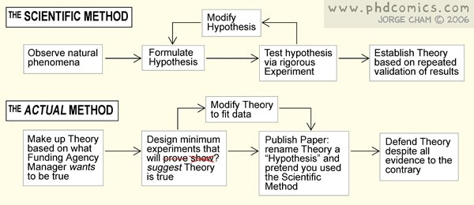
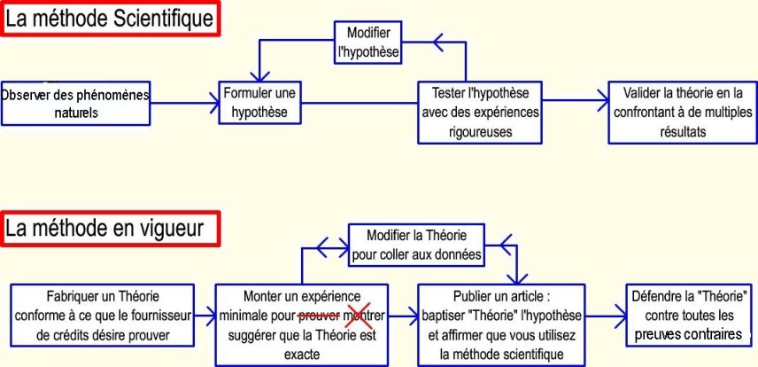
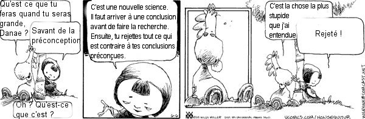
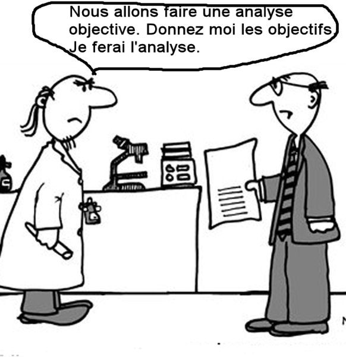
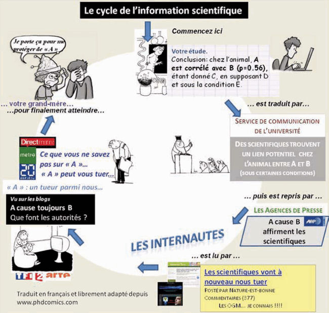

Un de mes collègues chercheur m'a fait parvenir un document amusant et surtout très révélateur des distorsions qu'apportent à la vraie démarche scientifique, les méthodes de financement actuelles qui visent à ne faire travailler les chercheurs que sur des contrats industriels ou sur d'autres formes de pilotage. En matière de recherche comme dans toute autre matière, les crédits c'est à dire l'argent indispensable à la poursuite de ses travaux, est le nerf de la guerre.
Hélas ! Hélas, Hélas, comme je vous l'ai déjà dit dans "ce blog, pourquoi faire", nous en sommes arrivés à des sommets en matière de distorsions et de détournements de la science dont on peut mesurer chaque jour les effets destructeurs : Omniprésence des lobbies, pression des médias, résultats déviants filtrés ou carrément interdits de publication, disparition de l'indépendance intellectuelle des chercheurs, effets de "mode" récurrents etc. Ce n'était pas comme cela, il y a quelques années !
Le plus révélateur de ce petit document c'est qu'il a été composé par un étudiant en PhD (Thèse de doctorat) d'une université américaine.Il s'appelle Jorge Cham et vous pourrez trouver la version originale (en anglais évidemment) de son petit diagramme sur son site, (www.phdcomics.com) très amusant et très typique des pressions qui s'exercent sur les jeunes chercheurs outre-atlantique mais aussi sur les nôtres, hélas, depuis peu (notamment par le biais de l'ANR (Agence Nationale de la Recherche)). Si vous êtes anglophone, je vous en recommande la consultation...
Voici le diagramme original :

Ci-dessous une interprétation libre. Je l'ai un peu adaptée tout en en conservant l'esprit. J'ai rajouté deux flèches inverses autour de "modifier la théorie pour coller aux données " (car, hélas, certains vont jusqu'à modifier les données. Cela s'est vu récemment !):


En gros, c'est çà ---->
Une autre illustration de cette même dérive a été relevée par un autre collègue et ami, lecteur espagnol, dans le livre de Pilkey, O.H., and L. Pilkey-Jarvis, 2007 :
"Useless Arithmetic: Why Environmental Scientists Can’t Predict the Future" New York, Columbia University Press.
On y trouve ce dessin éclairant ::
.
Alors, quand j'entends ou que je lis partout que telle ou telle commission adhoc est composée de "2000 chercheurs indépendants" (comme le GIEC, par exemple) et que je vois mes contemporains considérer cela comme une preuve que tout ce qui se dira ou s'écrira sera réellement indépendant, je baisse la tête.
Croyez moi, ami(e) lecteur(trice), c'en est à peu près fini de l'indépendance des chercheurs. Ils sont presque tous soumis à de tels impératifs de nos jours que sauf à se condamner à être privés de crédits et à végéter dans un placard pendant des années comme le dit Richard Lindzen, ils n'ont  d'autres choix que d'obtempérer et de se plier à la Pensée Unique. Ils ne sont pas tous comme Galilée, Einstein, Maiman, Darwin, Wegener etc!
d'autres choix que d'obtempérer et de se plier à la Pensée Unique. Ils ne sont pas tous comme Galilée, Einstein, Maiman, Darwin, Wegener etc!
Il est d'ailleurs significatif que beaucoup de ceux qui refusent d'adhérer, de nos jours, à la pensée unique en matière de climatologie et qui le clament haut et fort, sont, ou hors d'atteinte ou retraités comme Richard S. lindzen, Frederick Seitz et Bill Gray, parmi d'autres...
Enfin, les chercheurs moquent ou déplorent le traitement que font subir les médias à leurs découvertes. 
Voici un autre "comics", venant aussi de Jorge du Phd.comics.com. Très bien vu. Il a du talent et du recul, le jeune Jorge. Le texte orignal est en anglais. Cette version en français provient du site de l'AFIS.
C'est tout à fait ça et notamment pour les affaires de réchauffement climatique ...
Notez les distorsions successives :
:"Un chercheur trouve, chez l'animal, une corrélation entre A et B avec des restrictions C, D, et E aussi précises que limitatives "
L'agence de presse de l'université extrapole en oubliant qu'il s'agit d'animaux et en déclarant que "les scientifiques" on trouvé un lien potentiel entre A et B".Une corrélation est très loin d'indiquer un lien causal. De plus, les conditions restrictives sont minimisées.
.Le message est immédiatement interprété par les agences de presse (telles que AFP, Reuteurs, AP etc..) comme "A est la cause de B" sans préciser qu'il ne s'agit pas des humains.
Sur Internet, les fans du complot se déchaînent : " Les scientifiques vont encore nous tuer".
Les médias audio-visuels font de la politique.
Les journaux : "A va vous tuer ... "
La télé
"A : Un tueur parmi nous ?" vous en saurez plus à 11h.
C'est la panique ! La grande mère de l'étudiant porte un chapeau pour se protéger du tueur A. L'étudiant se voile la face !
_________________________________________________________________________________________________________________
Allez voir la page "paroles de grands chercheurs" . Vous serez étonnés : Il y a de très nombreux résistants parmi les bons spécialistes qui ne se privent pas de parler et de vous expliquer comme ça marche !
04/10/2009 : rajouté le dessin de Danae.
22/10/2009 : rajouté le comics sur l'écho des médias.
03/02/2012 : ce comics est remplacé par sa version française (h/t AFIS)
{kind=link}